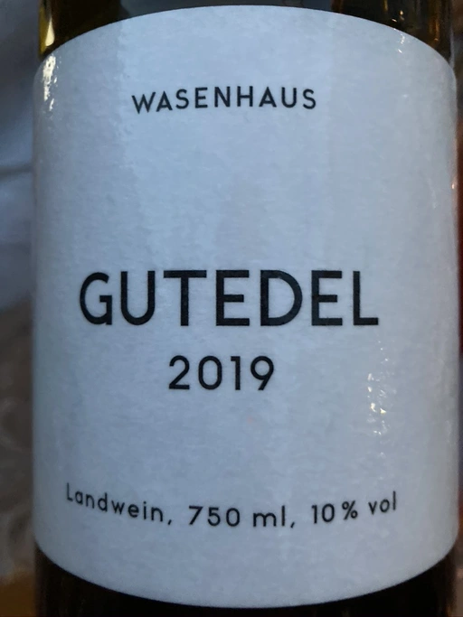

- Type
- White Still, Dry
- Producer
- Wasenhaus
- Vintage
- 2019
- Location
- Germany, Badischer Landwein
- Grapes
- Chasselas
- Alcohol
- 10
- Sugar
- 0
- Price
- 524 UAH, 570 UAH
- Cellar
- N/A
Ratings
2020-09-25 - 6.50
Too young, maybe the bottle is still stressed. Give it some time to calm down, to breathe (pranayama is popular now for a reason, right?). Touch of brett and all this stuff, apples, soaked apples, baked apples with cinnamon and honey, dry oak. And it’s actually good. It tries to be clean, but it’s not there yet.
2021-08-14 - 7.50
Tasting again in almost a year and it makes a critical difference. Still has lots of brett (now in a very good way) that fades away with time, leaving me with cheese, soaked apples, honeydew, parsley, dry oak, honey and nuts. Nuanced in the nose, so do not taste it in a hurry. Well balanced, maybe a little bit dull, but has interesting evolution curve with citric-parsley finish. Overall, it’s a good wine, complex and demanding.